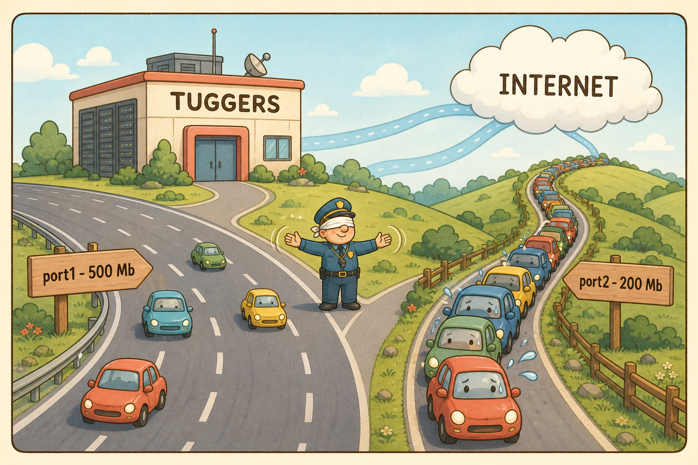
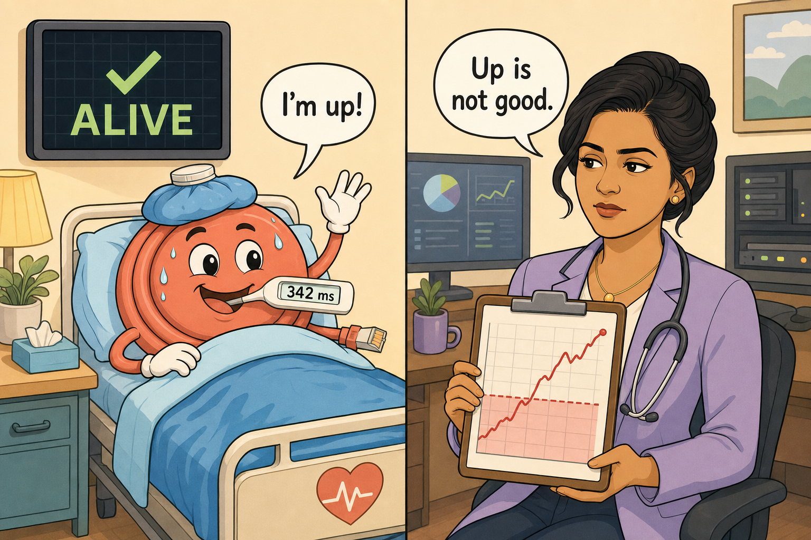
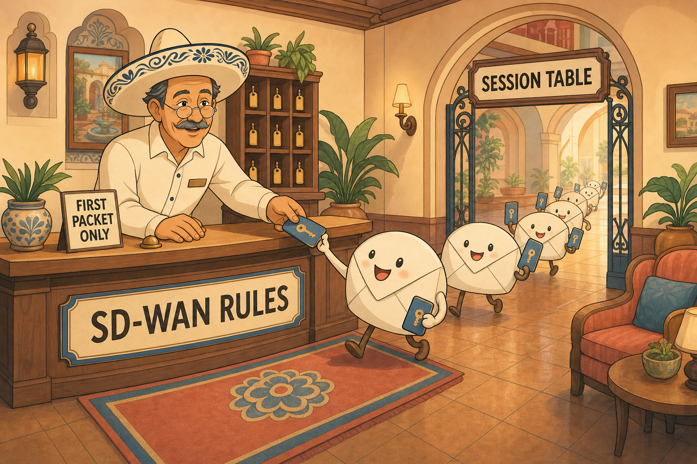
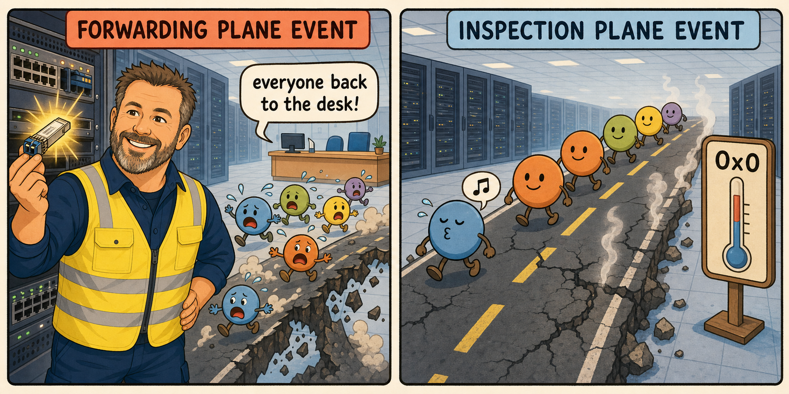
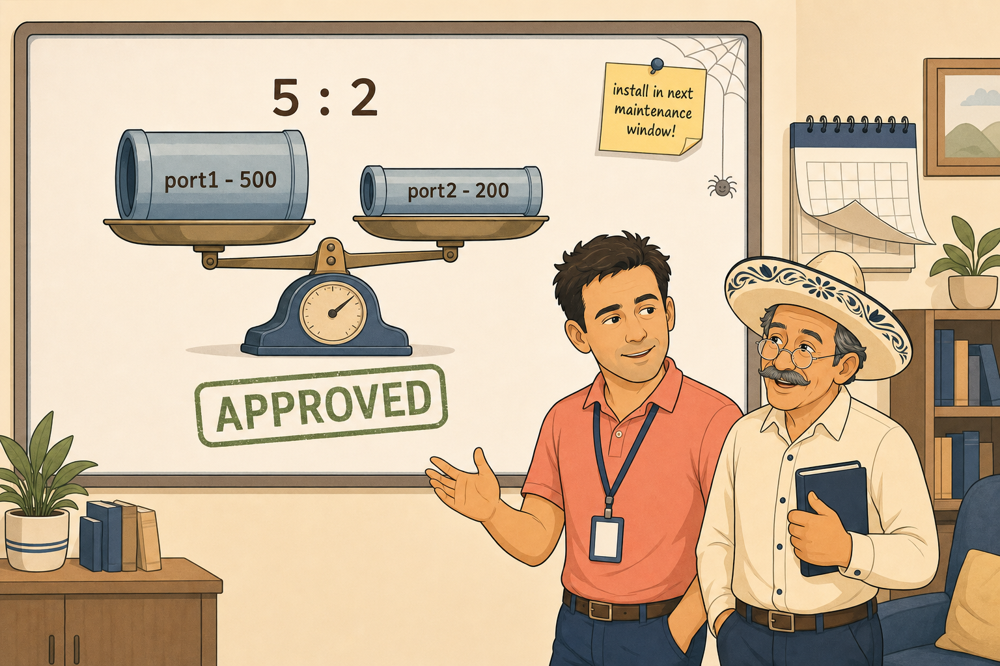
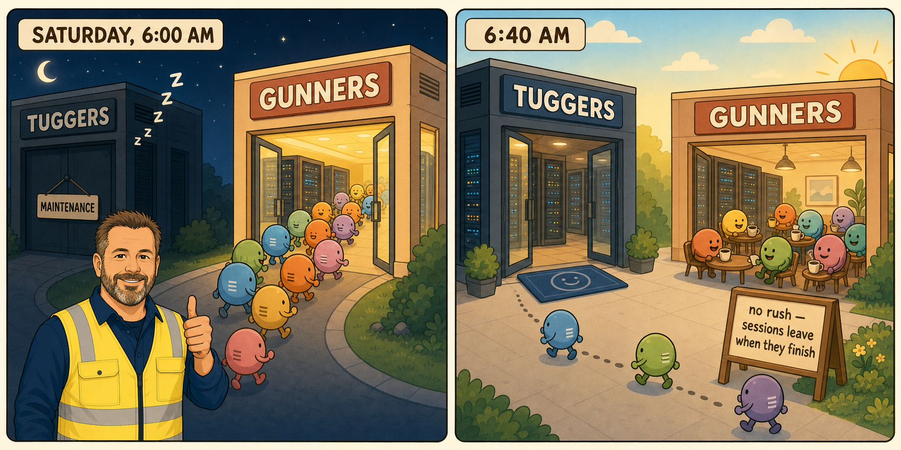
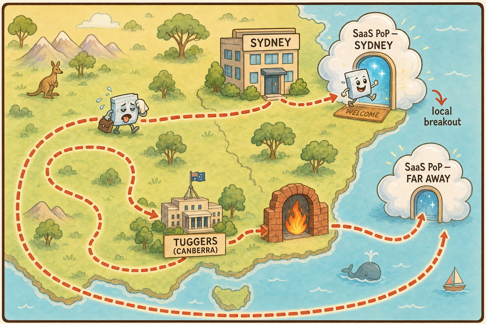

The Two Roads Out of Tuggers
In which nobody has written a single rule, and the hash doesn't care how wide the road is.
It started, as these things usually do, with somebody complaining about video calls.
Telstra Tower sits on Black Mountain above Canberra, and on the twelfth floor the Department of Fish keeps its network and security operations. It was chosen deliberately, that building. Not because anybody loved the view — although the view is very good — but because it sits roughly between the two data centres. Tuggers to the south. Gunners to the north. Fibre between them. The office was placed in the middle on purpose, so that no single disaster could take out both the people and the infrastructure at once.
Priya Nair came up to the twelfth floor on a Tuesday with a complaint that had been circling for a week. The executive floor's video conferencing was stuttering. Not always. Not for everyone. Different people on different days. And here was the strange part — downloads were fine. Fast, even. But Teams calls broke up, and the people they broke up for changed from one day to the next.
Señor Gonzalez was in his usual chair, sombrero tipped back, listening. Then he turned to Samwise and asked the question that would set the shape of the entire season.
"Before you look at anything — tell me what a zone actually is. Not what it does. What it is." — Señor Gonzalez
And Samwise got it, immediately. A zone is a named abstraction that groups members together, so firewall policies and routes can point at the name instead of at physical interfaces. It decouples intent from hardware. You write a policy that says "internet," and the zone decides which actual copper or fibre that means today.
Gonzalez nodded slowly. "Good. So the member is the road. The zone is the name you paint on the signpost. Now — what measures the road?"

The thermometer and the fever line
This is where Gonzalez made a correction that stuck for the whole season, and it's worth holding onto because the exam loves it.
A health check is a measurement — a probe sent on an interval, producing latency, jitter and packet loss continuously. It is a thermometer.
An SLA target is a threshold laid on top of the measurement. It is the fever line drawn across the chart. The health check measures; the SLA target judges. A health check without targets still measures. Targets without a health check measure nothing.
Samwise also worked out how the FortiGate decides a member is dead, though it took a correction. There is no mysterious hold timer. It is arithmetic: check interval multiplied by failure-before-inactive. Default 500 ms × 5 failures — roughly two and a half seconds to declare a member down.
The bitmask that everybody reads backwards
Then came sla_map, and this is where the session slowed down. The field is a bitmask. Each bit is one configured SLA target, and the bits are read least significant first. Bit zero is the first configured target. One means met, zero means missed.
Samwise read 0x2 as "first target met, second missed" — which is backwards. 0x2 is binary 10: the rightmost digit is bit zero and it's a zero, so target one missed; bit one is a one, so target two met. Once it clicked, it stayed clicked: 0x5 = 101 = met, missed, met. 0xB = 1011 = targets one, two, four met; target three missed.
sla_map is read LSB-first — bit 0 is the first configured SLA target. Reversing the read direction is the classic error, and it will be tested. Hold the direction: it comes back three times before the season ends.
The empty rule table
And then the actual finding, almost embarrassing in its simplicity. Tuggers had two WAN members in wan1-zone — port1 at 500 megabits, port2 at 200 — with a healthy active health check on both. And there were zero explicit SD-WAN rules. Every new session in the Department was falling through to the implicit rule.
The implicit rule, by default, distributes new sessions by source-IP hash. Deterministic — the same source always lands on the same member — but blind in two separate ways. Blind to capacity: the hash hands out sessions evenly by count, ignoring the 2.5:1 bandwidth difference. Blind to quality: the health check is producing beautiful numbers every half-second, and the implicit rule doesn't read them.
That explained both halves of Priya's complaint. Some users hashed onto a struggling member, so their calls stuttered. And the affected users changed daily — not because the hash changed, but because which member was struggling changed. The hash was stable. The road conditions weren't. Downloads were fine because a file transfer cares about throughput, and both links had plenty. A voice call cares about the shape of the delay, not the size of the pipe.
The first rule
The fix: an explicit SD-WAN rule for Teams, matched via the Internet Services Database — ISDB — not Application Control. ISDB is a pre-loaded set of known IP ranges, so Teams is identified on the very first packet. Application Control classifies after several packets have gone by — and by then the session has already picked a path. For steering, that delay is fatal.
Then the strategy. Samwise's first instinct was throughput thresholds — steer away from a busy member. Gonzalez redirected gently: throughput is a proxy. A guess at quality. And you don't need a guess, because the health check already measures the actual thing the call depends on. So: Lowest Cost (SLA) — filter to members meeting all SLA targets, pick the cheapest survivor. The decision consumes real measurements.
One rule went in. Everything else in the Department still fell to the implicit rule, and nobody had looked at that in years.
"A member can be up. A member can answer every probe you send it. And a member can be completely useless for a phone call at the same time. Up is a fact. Good is a verdict. They are not the same word." — Señor Gonzalez, leaving the room
Up Is Not Good
In which the dashboard is green, the calls are broken, and both things are true.
Six days later, Priya was back.
Teams calls breaking up again. FortiClient licensing checks timing out. And on the dashboard, both members of wan1-zone showing green. Alive.
Junior asked the obvious question: if the dashboard says both links are up, isn't this a different problem entirely? Gonzalez smiled under the sombrero and said nothing — which is how you know a session is about to get interesting.
Alive is not a verdict
Alive means the probe went out and came back within the timeout. That's all. A statement about reachability, saying nothing about how long the probe took or how many of its friends went missing. Good means the measured latency, jitter and packet loss are inside their configured SLA thresholds — a compliance verdict laid over the same data.
And here's the heart of the topic, reasoned out cleanly: you do not need a second tool for the quality numbers. Every probe round-trip already produces them. The time it took is latency. The variation between round-trips is jitter. The proportion that never came back is packet loss. One instrument, three outputs, running continuously.
The evidence
They ran it.
diagnose sys sdwan health-check status internet-hc
port1: latency 342.5ms jitter 61.2ms loss 4.0% sla_map=0x0
port2: latency 28.1ms jitter 6.4ms loss 0.1% sla_map=0x7
port1 sla_map 0x0 — all failing
- Latency 342.5 ms
- Jitter 61.2 ms
- Packet loss 4.0 %
port2 sla_map 0x7 — all passing
- Latency 28.1 ms
- Jitter 6.4 ms
- Packet loss 0.1 %

Samwise asked the right question before concluding anything: genuinely degraded, or thresholds set too tight? And answered from the raw numbers, not the bitmask. Three hundred and forty milliseconds with sixty of jitter and four percent loss is not a calibration problem. That link is sick. No reasonable threshold would call it healthy.
One wobble worth recording: Samwise briefly read the three bits of sla_map as three members. They aren't. The bitmask belongs to one member's health check, one bit per configured target within it. Port1 has its own. Port2 has its own.
The contradiction
Now the interesting part. If port1 fails every target and the Teams rule uses Lowest Cost SLA, the rule should already be steering Teams away. So why are calls still breaking?
Samwise sat with the contradiction instead of reaching for a config change — the strongest moment of the session. The rule governs new sessions. The calls breaking right now started before port1 went bad, were assigned when port1 was fine, and nothing has moved them since. The rule was correct. It had always been correct. The symptom came from sessions pinned to a link that fell apart underneath them.
diagnose sys session filter <criteria> diagnose sys session list
Lowest Cost (SLA) does not deprioritise a failing member — it removes it from the candidate pool. Fail one target, out of consideration entirely. Compare Manual, which ignores sla_map completely and takes the first Alive member in preference order. Same physical member, opposite outcome, purely strategy choice.
So: the rule was right, the fix was working, and the problem was that a session, once born, doesn't look back. Nobody yet knew why it doesn't look back. That was the next session.
The First Packet Chooses
In which every session gets exactly one visit to the front desk.
By the time they came back to it, Priya's incident had gone quiet. Not fixed — the calls had simply ended. People hung up, dialled in the next morning, and got a fresh session on the good link. The problem cured itself by attrition, which is the least satisfying resolution there is.
Gonzalez wasn't letting it go. "You proved a mechanism last week. You didn't explain it. Explain it."
The front desk and the access card
The model Samwise built became load-bearing for everything afterward. When the first packet of a new session arrives, it goes to the front desk: the SD-WAN rule table, top-down, first match wins. A rule matches, a strategy runs, a member is chosen — and that member's interface and next-hop are written into the session. Cached.
Every packet after that carries an access card. It doesn't ask again. It reads the cached forwarding info and goes. No re-lookup. The rule engine never sees it. The SD-WAN rule is consulted once, at session birth, and never again for that session.

Two planes, and what can cross between them
The inspection plane is where health checks live — probes, measurements, sla_map, verdicts. Updating constantly. The forwarding plane is where the FIB lives — routes, next-hops, and the cached entry inside each session. Structurally separate.
The critical consequence: an inspection-plane event can never, by itself, disturb an existing session. sla_map can hit 0x0. Latency can hit two seconds. The established session does not care, because nothing about the health check touches its cached forwarding entry.
Exactly two triggers force an existing session back through the rule engine:
1. A manual clear — an administrator flushes the session.
2. A FIB / route change — the route is withdrawn: interface down, BGP neighbour lost, static route invalid.
That's the list. SLA degradation is not on it. There is no periodic re-check of live sessions against SLA compliance. It does not exist.

Refreshed, or rebuilt?
When a route change forces re-evaluation, is the session torn down or updated in place? In the simple case — no NAT involved — it is refreshed in place. Same session identity, same five-tuple, new cached interface and next-hop.
And the right evidence for proving it: the session's duration counter in diagnose sys session list. Continuous through the failover = refreshed in place. Reset to near zero = torn down and rebuilt. What you do not use is the SD-WAN member field — that changes either way, so it proves nothing. (SNAT-translated sessions behave differently; parked deliberately for much later.)
The refinement
Then Samwise asked a question that improved the model rather than merely testing it: under Lowest Cost SLA, what if every member fails every target? If failing members are excluded and everything fails, is there any pool left?
Yes — and the earlier language needed sharpening. Lowest Cost SLA doesn't delete out-of-SLA members. It demotes them to the bottom of the same cost-ordered list. With at least one compliant member, that's indistinguishable from exclusion. But when everything fails, the list still exists — and the rule picks the cheapest failing member. Cost stays primary; configuration order only breaks cost ties. The traffic still flows — least-bad-by-cost, no quality guarantee, but it flows.
"Exclusion" wasn't wrong. It was incomplete. That distinction — a fact that is wrong versus a model that is merely unfinished — turned out to matter a lot later.
The Implicit Rule
In which "nobody configured it" turns out not to mean "nobody is responsible for it."
There was no incident this time. Just Racks, leaning in the doorway with a coffee, saying something offhand on his way past.
"You lot put one rule in for Teams and called it a day. What's everything else doing?" — Dave "Racks" O'Connor
Nobody had an answer, which is exactly the kind of silence that starts a session.
Not a dumb default
The implicit rule uses exactly the same mechanism as an explicit rule. A decision made once at session birth, cached, reused. The access-card model applies identically. The only difference is where the decision logic is configured: an explicit rule has a strategy field; the implicit rule is governed by a zone-level setting called load-balance-mode.
Eligibility takes two things — both: the member must be Alive per health check, and have a valid FIB route. Neither alone is sufficient. Samwise stated this correctly early, then dropped the FIB half under exam pressure twenty minutes later — a pattern worth watching.
Three ways to spread the load
| Mode | How it decides | Right when… |
|---|---|---|
source-ip-based (default) | Hash the source IP. Session-count fairness. Blind to capacity and SLA. | Links are equal and nobody's thought about it. |
weight-based | Static admin-set ratio. | Capacity difference is fixed, known, permanent. |
usage-based | Live measured throughput vs configured bandwidth. | Conditions fluctuate. |
None of the load-balance modes consult SLA data. SLA awareness is a rule-strategy concept. Implicit-rule modes do distribution, not quality.
The capacity-blind failure
Samwise then reasoned out a failure structurally different from anything so far. Both members perfectly healthy — Alive, Good, every target passing. And the hash spreading sessions evenly by count. Equal session counts on unequal pipes means port2 reaches a much higher percentage of its own capacity than port1. It saturates proportionally faster — and when it does, it starts adding latency and loss. A quality problem with no broken link anywhere. The distribution was simply wrong for the shape of the pipes.
The fix: weight-based, five to two, matching the bandwidth ratio. The capacity difference is permanent — no reason to measure something that never changes. It was written up, approved, and scheduled for a maintenance window. Remember that. It sat there unapplied for eight episodes and came back as a complaint.

The evidence trail
diagnose sys sdwan member # throughput vs configured bandwidth # proves PROPORTIONAL saturation diagnose sys sdwan sessions # session → member pinning diagnose sys session list # sdwan_mbr_seq / sdwan_service_id # present ONLY on explicit-rule sessions diagnose firewall proute list # vwl_service / vwl_mbr # route IDs > 65535 = SD-WAN/ISDB derived
Correctly rejected: get system interface shows configuration and admin state — not real-time throughput. Knowing which commands don't answer your question is half of troubleshooting.
Why not just write a catch-all rule?
The architect-level question, asked unprompted: if the implicit rule is the problem, write an explicit catch-all and control it properly? The answer is a real trade-off. Explicit rules only support rule strategies — Manual, Best Quality, Lowest Cost, Maximize Bandwidth. They cannot use load-balance-mode. A catch-all rule would take away weight-based and usage-based — the exact capacity-aware tools just identified as the fix. Two separate, non-overlapping tool sets.
One more confirmation, consistent with the access-card model: inserting or reordering rules never retroactively moves an existing session. FortiManager can push a whole new rule table; every established session keeps its cached decision. A rule table change is neither of the two triggers.
Racks, leaving, dropped the next thread on his way out: "Gunners has never actually taken over. Not once. Someday Tuggers falls over properly and we find out whether we've got a second data centre or a rumour."
Who Wins?
In which forty minutes of darkness must be predicted before it is permitted.
Racks booked it. A real maintenance window. Tuggers offline, completely, for forty minutes on a Saturday morning.
But Aisha Khan — SOC lead, allergic to changes made without evidence — put a condition on her approval. Before anybody pulled anything, Samwise was to prove, out loud, exactly what would happen to live sessions during the outage and after recovery. Not describe it. Predict it. And Gonzalez added a second condition, three sessions overdue: read sla_map cold, no warm-up.
Samwise read it correctly, first time. The wobble from the start of the season was gone. But a genuine gap surfaced behind it — flagged honestly rather than guessed at, which Gonzalez rated more highly than the correct answer.
sla_map in the session table is a per-session, per-member snapshot, frozen at the moment the owning rule last evaluated. It says nothing about any other member and never updates.
diagnose sys sdwan health-check is the live, all-member, right-now view.
Two different questions, two different commands.
Predicting the outage
Tuggers goes fully offline. Members gone, routes withdrawn from the FIB — a forwarding-plane event, trigger number two. Every session using those routes re-evaluates. Existing sessions tear down, the next packet births a new session, a fresh decision is made, traffic comes up via Gunners. Samwise walked it correctly — twice reaching for the phrase "marked dirty," catching it, and swapping back to plain already-taught language unprompted.
The asymmetry
Then the harder half, the part most people get wrong. Forty minutes later Tuggers returns. Routes reappear, members go healthy. What happens to the sessions now running through Gunners?
Nothing.
There is no preemption trigger. The two triggers are a manual clear and a route disappearing. A route appearing is not on the list. Nothing asks "has something better shown up?" for an established session. So traffic does not snap back — it trickles back, session by session, gated entirely by each session's own lifecycle: TCP RST/FIN, UDP idle timeout, or an admin clear.
Samwise translated it for Priya: it will come good over the next while as calls end and restart — not all at once. The correct operational expectation, and a far better answer than "it's fixed."

Best Quality, properly
With the test approved, Gonzalez ran a stress test rather than a definition. Two members: A has better latency but worse jitter; B has better jitter but worse loss. Both compliant. Under Best Quality, who wins?
Samwise reasoned by elimination: it can't be a holistic blend, because there's no defined way to weigh a millisecond of latency against a percent of loss. So it decides on one metric. Correct: Best Quality selects on exactly one configured link-cost-factor — latency, jitter, packet loss, or one named composite option. Never a live weighted mix.
And the justification for real-time voice: jitter. A call tolerates consistent delay — the codec buffers it. What destroys a call is delay that keeps changing, because the jitter buffer can't absorb variance it can't predict.
Lowest Cost, properly
Then Lowest Cost — and Samwise used the Best Quality model as a consistency check rather than guessing, the strongest move of the session. If "cost" were a live measurement, Lowest Cost would just be Best Quality with different words. So cost must be something else. It is: a static, administrator-assigned integer on the member itself, typically representing commercial cost. Prefer the cheap link when quality allows.
Every SLA-aware strategy runs the same shape:
Stage 1 — SLA compliance filters the eligible pool.
Stage 2 — the tie-breaker decides among survivors (link-cost-factor for Best Quality, static cost for Lowest Cost).
One exception: under Lowest Cost, when every member fails every target, stage 1 is skipped and cost decides alone.
Two exam questions failed the same way: the two-stage process collapsed into one stage. Once treating "lowest cost" as an absolute override, once believing link-cost-factor blends metrics. Both corrected by restating rules already stated correctly minutes earlier. Not a gap in either strategy — a gap in holding "filter, then decide" as a structure under pressure.
Where everything lives
health-check # probe server, interval, members, SLA thresholds members # interface, gateway, priority — and static COST service # the explicit rule: mode sla, strategy, # link-cost-factor (Best Quality only)
Direct to the Internet
In which Sydney's packets stop commuting to Canberra just to leave the country.
Saturday came. Racks pulled Tuggers.
And everything happened exactly as predicted. Clean member drop. Sessions re-established via Gunners. Forty minutes later Tuggers came back and traffic trickled home over the following hour, session by session. Gunners was a real data centre, not a rumour.
Which lasted about as long as it took Priya to walk in with the next problem.
Sydney
Dr Eleanor Finch had approved a satellite office in Sydney. It was up, it was working, and the users hated it. SaaS sluggish in a way Canberra never was. The design explained it instantly: Sydney backhauled every internet-bound packet to Tuggers. Sydney to Canberra, out to the internet, back through Canberra, back to Sydney.
Samwise made the case for that design before criticising it — the right instinct. Central breakout gives you one inspection point: one firewall, one policy set, one place the SOC looks. A real benefit, and why the design existed.
But then the insight that is genuinely the whole architectural justification for local breakout, reached largely unprompted: the SaaS provider almost certainly has a point of presence near Sydney. Microsoft is not serving Sydney from Canberra. Backhauling doesn't just add the round trip — it presents Sydney's traffic to the wrong regional PoP, connecting to a distant front door when there's one down the street.

| Shape | Wins | Pays |
|---|---|---|
| Central | One inspection point, consistent policy, full central visibility | Round-trip latency, wrong regional PoP |
| Local | Nearest PoP, best SaaS experience | Branch must inspect; logs must be forwarded |
| Hybrid | Split per app/destination via explicit rule + ISDB | Design effort; more moving parts |
Visibility moves — it doesn't vanish
Samwise identified Aisha's objection before she made it: local breakout means the SOC loses sight of Sydney's traffic. And then resolved it, the strong architectural moment of the season. Local breakout moves the inspection point; it does not remove inspection. The Sydney FortiGate inspects locally, applies the profiles, and forwards its logs to FortiAnalyzer. The SOC still sees everything. The packets simply never had to visit Canberra to be seen. The performance-versus-visibility dilemma was false once you separated where inspection happens from where visibility aggregates.
The hybrid design
Proposed unprompted, with three legitimate reasons to keep some traffic central: IP whitelisting tied to the DC's known SNAT address; heavier inspection capability at the DC; and SaaS matched via ISDB going straight out the local circuit. So: Sydney keeps its DC-facing member, gains a new SD-WAN member for the local circuit in its own zone, and an explicit ISDB rule steers Teams and SharePoint locally. Everything else stays on the DC path. Logs go to FortiAnalyzer.
An SD-WAN rule selects a member, not a route. The FIB sits underneath the member. Before any rule can steer to the local circuit, that circuit must exist as an SD-WAN member. Member first. Route underneath. Rule on top.
"Rule fails to match" ≠ "traffic dies." If a rule's members are all ineligible, the session falls through to the next rule and ultimately the implicit rule — which routes it perfectly well via the FIB. But relying on that fallback is a design gap, not a safety net: the implicit rule has no ISDB awareness (the traffic is no longer "Teams", just packets) and no SLA awareness (a degraded-but-Alive member is a perfectly acceptable destination).
The problem behind the problem
Gonzalez asked one last question: this design is correct for Sydney. What happens when you build it thirty more times?
And Samwise named it without prompting: policy drift. Every site hand-built by a different person on a different day, all slightly different, none comparable. The design is fine. The management of the design is the problem.
A networking answer to a management question — and it ended Season One exactly where Season Two needed to begin.
The Field Guide — What Book One Actually Built
Everything in Book Two stands on these. If you only re-read one section, make it this one.
diagnose sys sdwan health-check is the live view.load-balance-mode (capacity-aware, SLA-blind). Non-overlapping. A catch-all rule can't do weight-based.diagnose sys sdwan health-check status <name> # live per-member L/J/PL + sla_map diagnose sys sdwan member # throughput vs capacity diagnose sys sdwan sessions # session → member pinning diagnose sys session filter / list # narrow first, then inspect diagnose firewall proute list # SD-WAN derived routes (>65535)